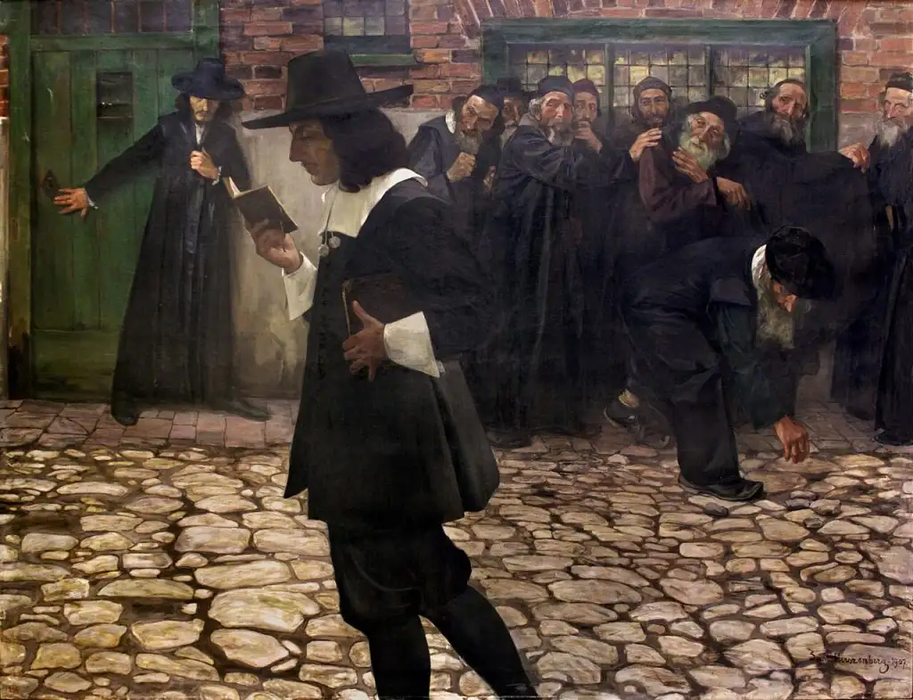

La herida de Spinoza

,_1907.jpg){kind=link}
Se trata de un libro de Vicente Serrano publicado por Anagrama en 2011. Aunque el punto de partida es una reflexión de Damasio sobre el autor sefardí asentado en Ámsterdam, se trata de un libro de vuelo alto, una interpretación que se puede situar en el plano donde confluyen la historia de la filosofía y la filosofía de la historia.
El autor plantea cómo se ha producido una transformación histórica en el modo de comprender las ideas fundamentales de tipo ético y existencial desde la modernidad primitiva (si se acepta el oxímoron) hasta la actualidad.
Damasio lee a Spinoza desde unas coordenadas (que llama también «marcos») que permiten comprender la transformación que se produce desde las formas de pensamiento antiguas y medievales hasta las plenamente modernas. Spinoza se mueve en una modernidad todavía no en su plenitud, que viene a estar representada por la Voluntad de poder de Nietzsche. Hay que entender que este término no designa solo un aspecto de la filosofía de Nietzsche en particular, sino del marco general en que se desenvuelve la modernidad. Esta insatisfacción infinita, esta circularidad perpetua de crecimiento indefinido que tan bien describió Marx: un crecimiento virtualmente ilimitado que suena tan contemporáneo en una actualidad volcada en la mejora continua y el desarrollo como máximas culturales. Y es que la propuesta de Vicente Serrano se acopla muy bien con los planteamientos filosóficos de las diferentes épocas y con los fenómenos históricos adheridos a ellos como los entornos referenciales en los que se desenvuelve el pensamiento de cada época:
A la teoría fijista de las especies de la naturaleza le sucede la teoría de la evolución, y el propio cosmos según la ciencia moderna es un universo en expansión a partir de un momento cero y como tal se expande hacia el infinito. La economía nos enseña que el crecimiento y el desarrollo son la clave del sistema económico del que dependemos. Todos queremos más y siempre queremos más. La quietud es comparada con la muerte en nuestro mundo, la velocidad, el incremento, la expansión, son sinónimos de avance y de progreso. Incluso la revolución, término que era inconcebible para un habitante del mundo premoderno, se convierte en palabra clave, de manera que nuestro mundo es fruto de sucesivas revoluciones, la industrial, la liberal, la proletaria, que marcan los hitos de nuestra historia en los últimos siglos. (Serrano, 2011, p. 59)
Quizá en ese acoplamiento reside el mayor problema del texto, en la «facilidad» (pido disculpas por las comillas) con que se organizan los periodos y en que se sitúan conceptualmente los diferentes sistemas en un marco más o menos uniforme. En definitiva, todo esfuerzo de esta clase debe llevar a cabo un cierto grado de adaptación para hacer caer la diafonía ton doxón en las categorías planteadas. Sin embargo, al modular de ese modo los planteamientos filosóficos concretos podemos decaer en una deformación abstractiva de la que hay que cuidarse en la medida de los posible. Cobrada consciencia de esta precaución, tampoco hay que sacralizar el asunto y tener tantos reparos como para convertirse en un Pierre Menard de la filosofía, al fin y al cabo, la asebeia es el pecado original del pensamiento.
Dicho lo cual, la transición desde la filosofía moderna, con las preocupaciones centradas en el sujeto, el Estado y las instituciones modernas, hacia los planteamientos de Foucault sobre las pasiones que abarca la parte final del libro, no cabe duda de que recogen con finura y en síntesis la evolución de la filosofía contemporánea… no necesariamente a mejor. En cualquier caso, a falta de un análisis más detallado que dilataría esta entrada hasta quizá una indefinida publicación, es un libro muy recomendable cuya lectura recomendamos encarecidamente.
Publicado originalmente en PortalEdu. Texto e imágenes conservados de la publicación original.